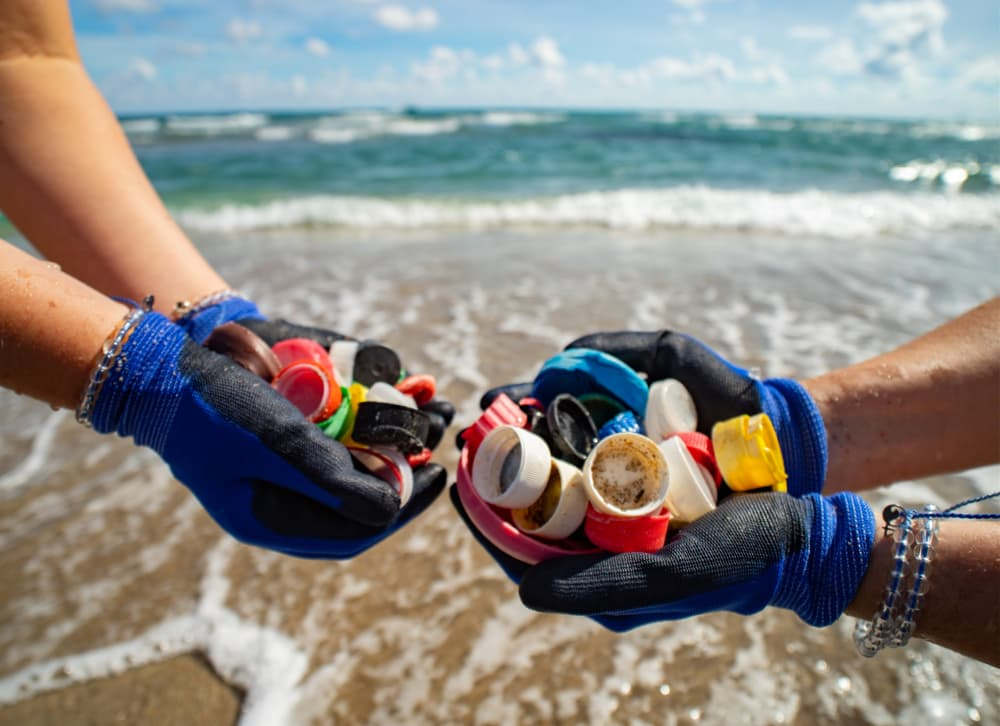
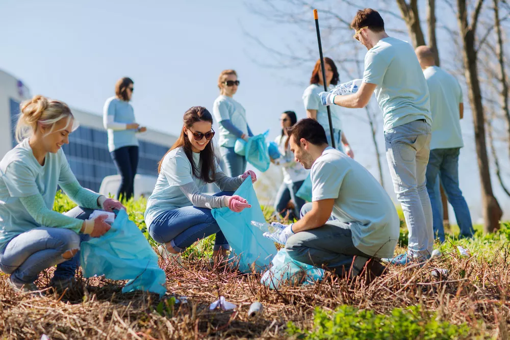

Serving the Community

Volunteer Work
The importance of volunteer work is not lost upon me. Ever since I was in the 6th grade, I've always been an active member in the community simply by lending a hand. As I grew older, I took on more responsibilities and took several initiatives to help around my neighborhood.
Beach Clean up
Participated for several hours in cleaning up Emerald Isle from trash left by a party that happened there. Worked with over 50 volunteers to clean up the beach. Collected
money from the local residents to fund the project and learnt first hand how to raise money for a project and lead a team in a laborious task.
Pop-up soup kitchen
Created a pop-up soup kitchen near my high school with 6 of my friends to feed the homeless around the area. The soup was free for the people and we got a full-time soup kitchen to be built there after seeing the demand for our produce.
Global Warming Awareness
Campaign
Created a presentation and showcased it on Earth Day to the local residents about the harmfulness of global warming. Conducted a debate and raised money for NGO's to use to fight climate change and restore balance to nature. Took part in the #teamtrees initiative by contributing financially and laboriously to the cause by planting over 20 trees in my neighborhood.